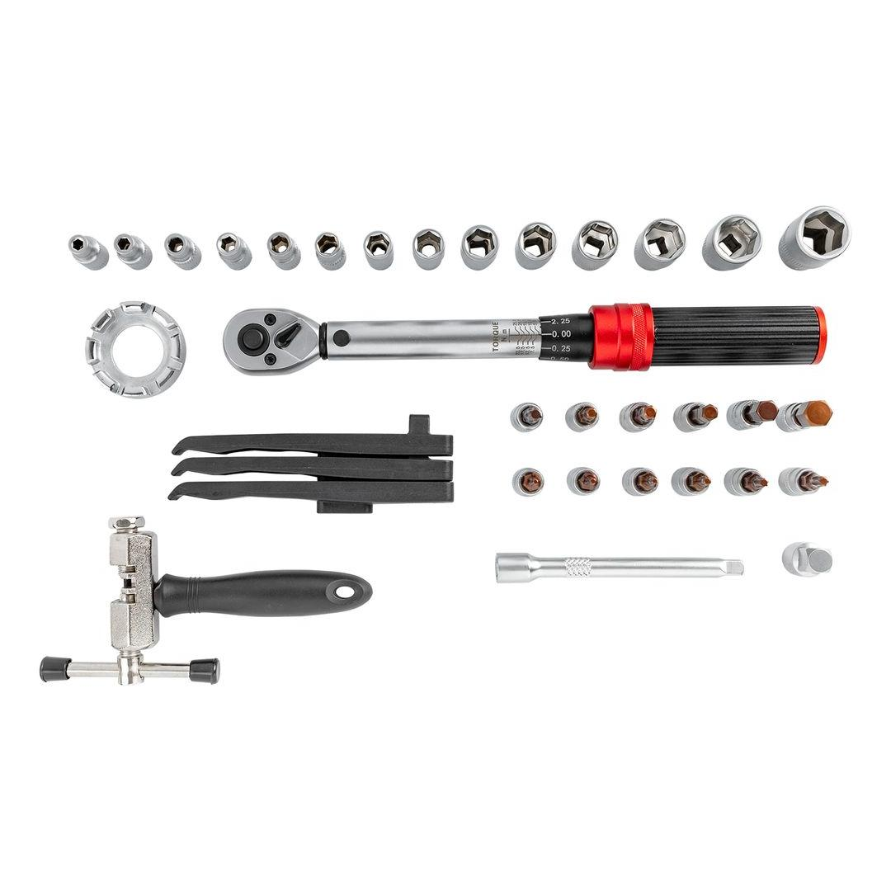
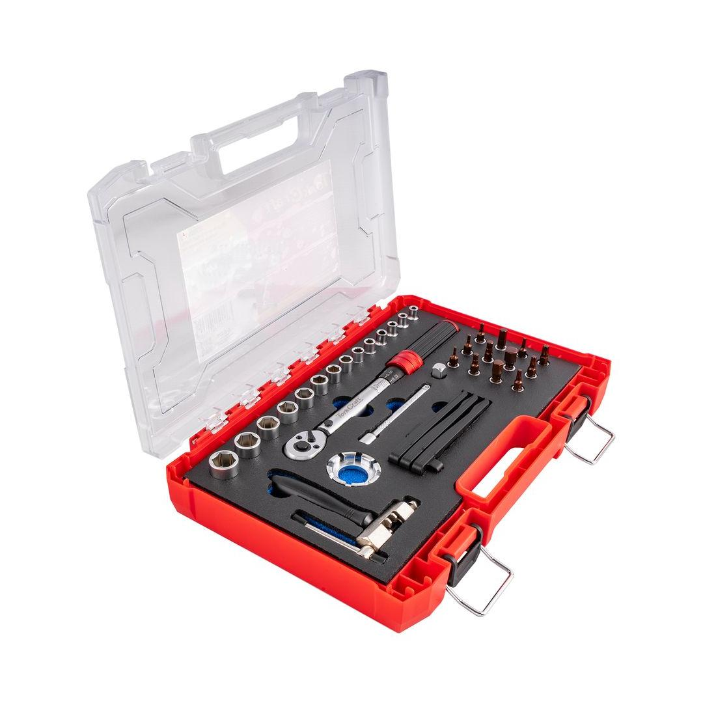
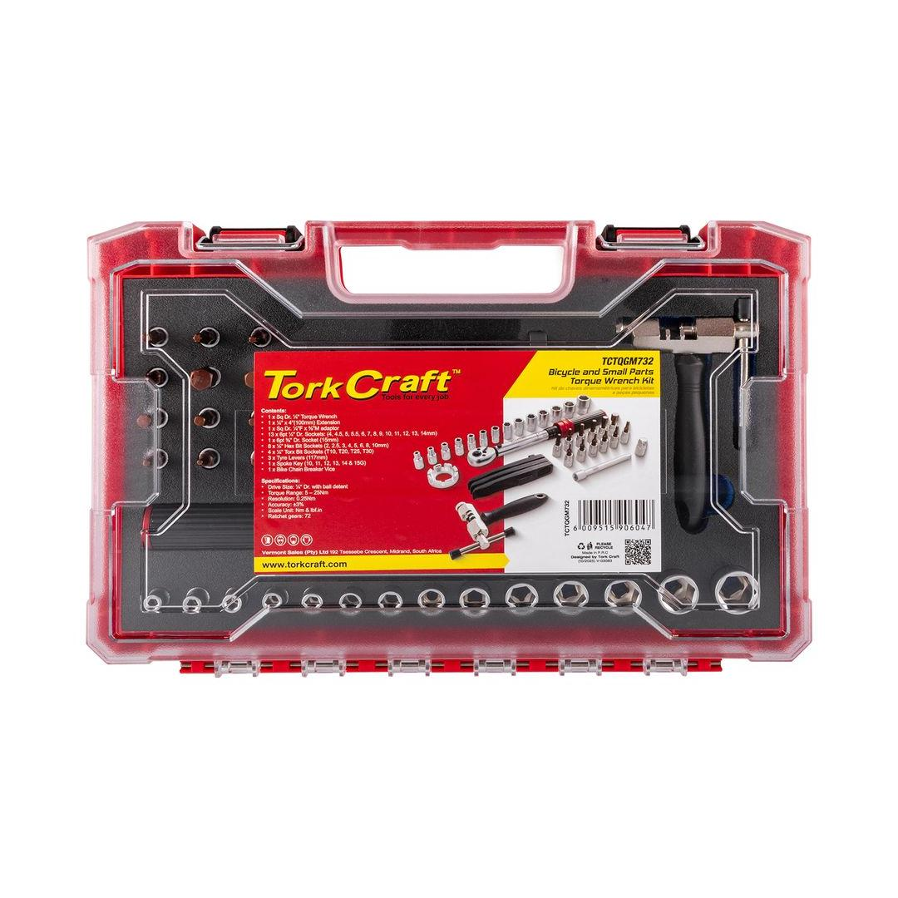

TCTQGM732



Torque Range: 5 - 25Nm
Classification: Standard (Yellow)
This comprehensive 34-piece Bike Repair Torque Wrench Set is the ultimate collection for precision bicycle maintenance, designed to address nearly every fastener on a modern road, gravel, or mountain bike. This extensive kit moves beyond basic repairs, offering the meticulous control necessary for working with high-performance components, including those made from delicate and expensive materials like carbon fiber.
The centerpiece of this professional-grade kit is a high-accuracy torque wrench, featuring a critical low-range scale (e.g., 2 to 24 Nm). This essential tool allows the user to safely tighten sensitive components like handlebars, seatposts, and stem bolts to their precise Newton-meter (Nm) specifications. This meticulous control is non-negotiable for rider safety and is the key to preventing catastrophic component failure or costly damage from accidental over-tightening.
Completing the set are the remaining 33 interchangeable pieces, forming an extensive collection of high-quality bits, sockets, and extensions. This comprehensive assortment typically includes all necessary Hex (Allen), Torx, and often specialized bits, ensuring compatibility with all common component standards and bolt heads. Housed in a durable, organized storage case, this 34-piece set equips both the professional mechanic and the dedicated home builder with the confidence and tools necessary to perform complex assembly, component upgrades, and routine servicing to the highest factory standards.
Application: